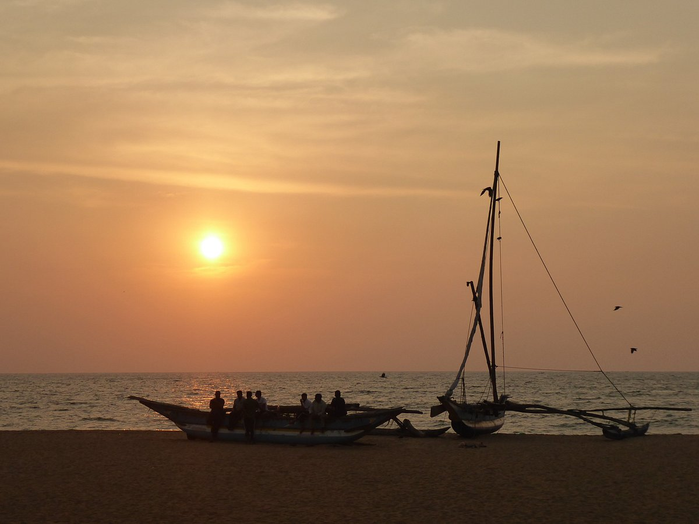

Bustling golden sands, a lively stretch of boutiques, and the most spectacular sunset views on the west coast.
Negombo Beach is one of the most popular coastal stretches in Sri Lanka, known for its wide expanse of golden sand and lively atmosphere. Located just a short drive from the international airport, it serves as the perfect first or last stop for travelers.
By day, the beach is a hub for water sports and local kite flying. By night, the shoreline transforms into a vibrant dining destination with numerous seafood restaurants and beach bars offering fresh catches of the day under the stars.
Back to Negombo Hub